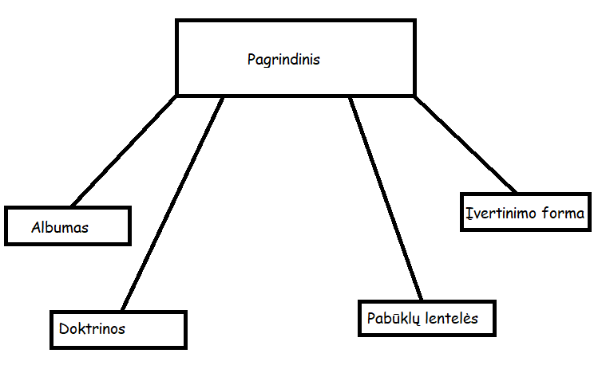

Svetainės žemėlapis
Kas yra artilerija ir jos tipai
Artilerija yra sunkiųjų karinių nuotolinių ginklų klasė, kuri paleidžia amuniciją (sviedinius) toliu už pėstininkų šaunamųjų ginklus. Artilerija yra skirstoma į:
- Patrankas:
- -Seniausias artilerijos tipas su tiesiogine šaudymo trajektorija.
- Bombardas:
- -Didelio kalibro, patranka ar minosvaidis, naudojamas apgulties metu šaudyti apvaliais akmeniniais sviediniais į priešo įtvirtinimų sienas.
- Apgulties artilerija:
- -Didelio kalibro artilerija, turinti ribotą mobilumą su netiesioginio šaudymo trajektorija, kuri buvo naudojama bombarduoti taikinius dideliais atstumais.
- Lauko artilerija:
- -Mobilūs ginklai, naudojami kariuomenei palaikyti lauke.
- Geležinkelio pabūklus:
- -Didelio kalibro ginklai, montuojami ant specialiai sukurtų geležinkelio vagonų, gabenami ir šaudomi iš jų.
- Laivyno artilerija:
- -Karo laivuose montuojami ginklai, skirti naudoti prieš kitus laivus arba bombarduoti pakrantės taikinius, remiant sausumos pajėgas.